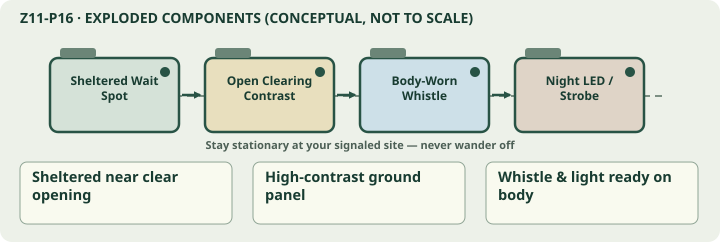

Z11-P16 · Navigation, weather and rescue · Adapted historical material
Make a stationary position visible and audible to searchers
Increase detection range for ground teams and aircraft while staying safely together at a single sheltered site.
When it applies · Overdue, injured or lost party holding position awaiting search and rescue.
Equipment · Pea-less whistle, bright contrasting tarp or clothing, LED headlamp/strobe, signal mirror and phone/beacon if available.

Actions
- Choose a sheltered spot adjacent to a clear natural opening (meadow, clearing edge or open ridge) where bright contrasting colors or cleared snow/ground letters stand out from overhead without exposing the group to wind or avalanche.[N09, T06, E05]
- Deploy high-contrast panels or bright gear securely anchored against wind, keeping a whistle worn around the neck and a headlamp ready at dusk to answer searcher calls or lights.[N09, E02, C11]
- Stay at your marked position rather than walking away from signals—abandoning a signaled spot forces searchers to search empty ground.[N09, T06]
Failure recognition · Hiding completely beneath dense dark evergreen canopy wearing olive/brown jackets while search aircraft or ground teams pass nearby.[N09, T06]
Verify · Confirm bright contrast is visible from above/nearby trails, whistle and light are immediately in hand and the group stays sheltered together.[N09, E05, ED]
Stop or change course · Never light uncontrolled brush fires as signals or step onto unstable ice/cliffs to improve visibility.[C01, C18, E12]
Evidence and editorial notes
- C01 · Minnesota DNR · Fire Danger and Burning Restrictions (current web edition; verify at use)
- Section: Fire danger and burning restrictions map and links · Conditions: Current Minnesota location, date and jurisdiction
Support: Check current restrictions and local authority requirements before lighting.
Limitations: Restrictions can change daily with humidity, wind, and drought; verify immediately before use. · Conflicting evidence: None; local jurisdiction always supersedes general notes.
Editorial note: Mandatory legal check before any live fire card. · Specialist reviewer: Fire prevention and local land management
Primary source · checked 2026-11-24 - C11 · NPS · Ten Essentials (current web edition)
- Section: Fire and illumination · Conditions: Outdoor emergency kit
Support: Carry a dependable ignition option and protect it from moisture. Carry a separate light.
Limitations: Disposable butane lighters lose vapor pressure in freezing cold; matches fail when damp. · Conflicting evidence: None; supports redundant dry ignition kit planning.
Editorial note: Keeps lighting independent of fire-building. · Specialist reviewer: Field equipment and fire prevention
Primary source · checked 2026-11-24 - C18 · NWS Chicago · Definitions of a Fire Weather Watch and a Red Flag Warning (Current web edition)
- Section: Red Flag Warning and Fire Weather Watch Definitions · Conditions: Local fire weather outlook and land-manager order
Support: A Red Flag Warning means local conditions support extreme fire danger. Check local criteria and restrictions and adjust plans.
Limitations: A wind advisory alone is not a Red Flag Warning or an ignition permit. · Conflicting evidence: See A02 claim audit for boundaries.
Editorial note: Establishes Red Flag / high-wind conditions as automatic no-fire triggers. · Specialist reviewer: Wildland fire safety and meteorology
Primary source · checked 2026-11-25 - E02 · NPS · Ten Essentials (current web edition)
- Section: Navigation; insulation; emergency shelter; emergency food and water · Conditions: Outdoor trips; adjust kit to season and route
Support: Carry essential systems including navigation, insulation, light, water and emergency shelter.
Limitations: Carrying items without practice or cold-weather verification does not ensure readiness. · Conflicting evidence: None; baseline kit system architecture.
Editorial note: Supports failure-mode packing and kit verification cards. · Specialist reviewer: Field education and search and rescue
Primary source · checked 2026-11-24 - E05 · NWS · What To Do If You're Caught in a Winter Storm (current web edition)
- Section: Outside and find shelter · Conditions: Cold, wet or windy winter conditions
Support: Block wind, stay dry and keep off cold ground. Keep exposure reduction separate from making a fire.
Limitations: Improvised windbreaks do not provide rated thermal protection or snow-load capacity. · Conflicting evidence: None; aligns with CDC-H.
Editorial note: Separates wind, ground, and moisture heat-loss pathways. · Specialist reviewer: Cold-weather shelter specialist
Primary source · checked 2026-11-24 - E12 · Minnesota DNR · Ice Safety (current web edition)
- Section: Ice Safety > basic precautions · Conditions: Minnesota ice edges and travel routes
Support: No ice is universally safe. Strength can differ over short distances; appearance or tracks alone cannot establish a safe crossing.
Limitations: Currents, springs, snow insulation, and freeze-thaw cycles weaken ice invisibly. · Conflicting evidence: None; mandates shore-bound detour for foundational walking parties.
Editorial note: Maintains strict separation from specialized B013 ice chapters. · Specialist reviewer: Ice safety and search and rescue
Primary source · checked 2026-11-24 - N09 · NPS · Outdoor Emergency Plan (current web edition)
- Section: If You Get Lost; Seek help · Conditions: Lost hiker who cannot safely retrace steps and has sought rescue
Support: Report last known location and landmarks. Stay put while awaiting help unless an immediate threat requires getting to safety.
Limitations: Navigation, signaling method and safe movement depend on site and responder instructions. · Conflicting evidence: See A02 claim audit for boundaries.
Editorial note: Core evidence for lost-person psychology, signaling and SAR coordination cards. · Specialist reviewer: Search and rescue
Primary source · checked 2026-11-24 - T06 · NPS · Outdoor Emergency Plan (current web edition)
- Section: If you get lost or hurt; call for help · Conditions: Outdoor US emergency
Support: Communicate location, last known point, situation and needs. Stay put when unable to establish a safe route unless immediate danger requires movement.
Limitations: Cell signal is unreliable in backcountry terrain; pre-trip plans bridge communication gaps. · Conflicting evidence: None; core lost-person decision rule.
Editorial note: Foundation for stay/signal/move and dispatch handoff cards. · Specialist reviewer: Search and rescue
Primary source · checked 2026-11-24
Source lineage · B014-P16 signaling and NPS emergency plan; adapted historical material · Classification · Adapted historical material.